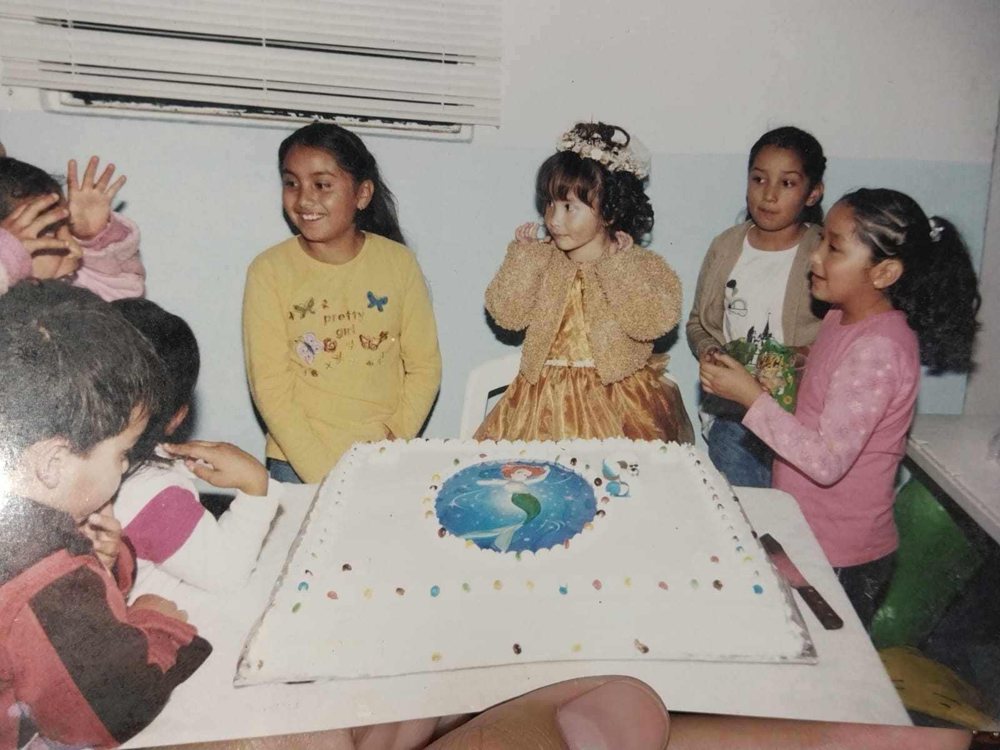

Autobiografia
La Historia de mi Vida
Mi nombre es Rocío Perez Salazar, tengo 17 años, nací el 9 de septiembre de 2006 en la localidad de San Miguel Ameyalco, desde que recuerdo, he vivido con la compañía de mi hermano Rubén, mi mamá y mi papá, en el 2010 entre al kinder y salí en 2012, posteriormente ingresé a la primaria donde me informe como una alumna destacada en los primeros tres años, después de eso hubieron factores que hicieron que bajar a mi rendimiento como burlas y amenazas por parte de niñas de mi clase, eso no me detuvo y salí adelante, concluir la primaria en 2018, mi familia siempre estuvo presente en los momentos más difíciles e importantes para mí, entré a la secundaria ese mismo año y ahí conoció buenas amistades en primer grado pero descuide la escuela, tuve mi merecido y comencé a mejorar, eso antes de qué todo se fuera abajo de nuevo con burlas e intimidaciones de supuestos amigos, esto es muy difícil de superar pero con el tiempo lo hice, mi familia y amigos muy leales me apoyaron en eso, en segundo grado casi tercero se vino la pandemia y dejé de ir a la escuela por casi dos años, fue muy difícil y viví momentos duros pero eso me hizo más fuerte, por suerte mi familia no pereció durante esta y seguimos unidos, en 2021 ingresé a la preparatoria, fue complicado volver al la escuela después de un largo tiempo pero me lleno de ilusión volver, me gustaba mucho la prepa, los maestros y mis amistades, pasé a segundo grado y conocí a mis mejores amigos que conservo actualmente, conocí nuevos lugares y tuve nuevas experiencias muy bonitas como enamorarme y conocer lo que era el amor, entré a tercero y todo ha sido mejor subí mucho mis calificaciones y me enfoqué en ser la mejor actualmente me encuentro a menos de un mes de salir de la preparatoria y fui aspirante seleccionado en la carrera de psicología en la UAEM, estoy emocionada, sé que faltan muchas cosas por vivir y por mejorar pero estoy segura de qué lograré todo lo que siempre deseado.